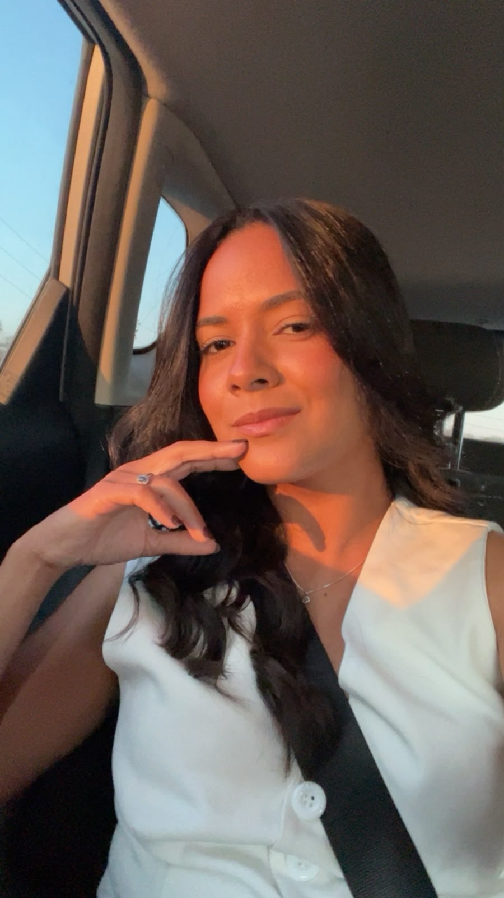

Irrigação e drenagem
Estudo do manejo hídrico e de estratégias para o uso eficiente da água em sistemas agrícolas.
Mestre e doutoranda em Engenharia Agrícola, com formação em Engenharia de Biossistemas, dedicada a investigar soluções para o uso sustentável da água e a produção agrícola no semiárido.

Minha trajetória é movida pelo desejo de compreender os desafios do campo e transformar conhecimento científico em caminhos para uma agricultura mais eficiente, resiliente e sustentável.
Sou Engenheira de Biossistemas e Mestre em Engenharia Agrícola pela Universidade Federal de Campina Grande. Atualmente, curso doutorado em Engenharia Agrícola. Minha atuação integra manejo da água, salinidade e fisiologia vegetal, com atenção especial às condições do semiárido.
Pesquisa aplicada para tornar a produção agrícola mais consciente, produtiva e preparada para os desafios ambientais.
Estudo do manejo hídrico e de estratégias para o uso eficiente da água em sistemas agrícolas.
Avaliação das respostas das plantas à salinidade e de alternativas para mitigar seus efeitos.
Análise do crescimento, das trocas gasosas e da qualidade de mudas sob diferentes condições.
Soluções agronômicas conectadas à realidade hídrica e produtiva do semiárido brasileiro.
O estudo avaliou como diferentes níveis de salinidade da água e concentrações de prolina influenciam a fisiologia, o crescimento, a qualidade e a tolerância de mudas de maracujazeiro-azedo.
Da gestão dos recursos hídricos à resposta das plantas ao estresse salino, cada etapa amplia o compromisso com uma agricultura mais sustentável.
Graduação pela Universidade Federal de Campina Grande, com pesquisa sobre demanda de água urbana no setor comercial da microrregião de Araripina — PE.
Conclusão no PPGEA/UFCG, na área de concentração em Irrigação e Drenagem.
Aprofundamento da trajetória acadêmica e desenvolvimento de estudos sobre irrigação, fisiologia vegetal, fruticultura e tolerância das culturas ao estresse salino.
Para colaborações acadêmicas, projetos de pesquisa e troca de conhecimento.
contato@larissafernanda.com.br